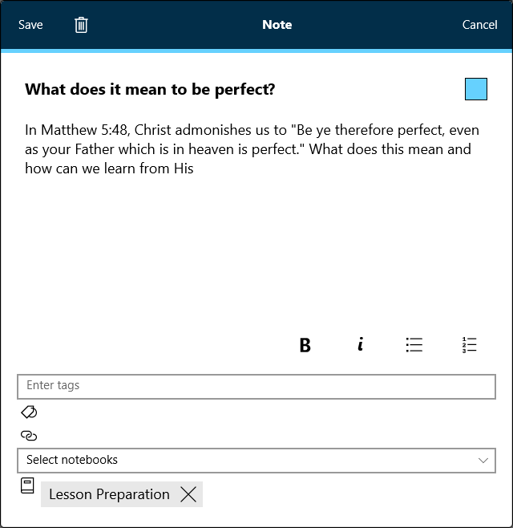
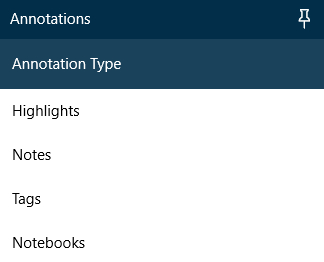
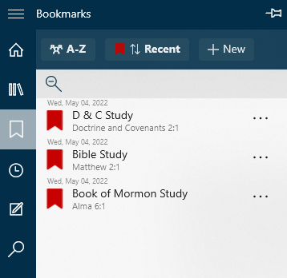
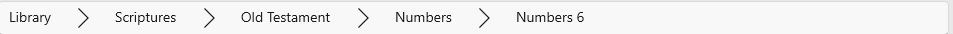
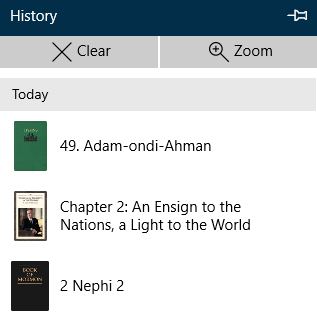
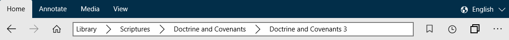
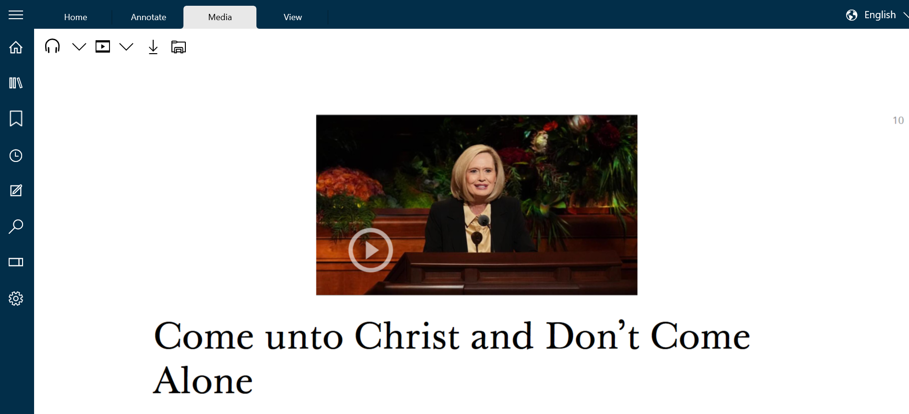
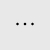
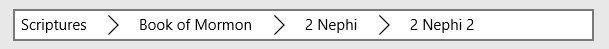
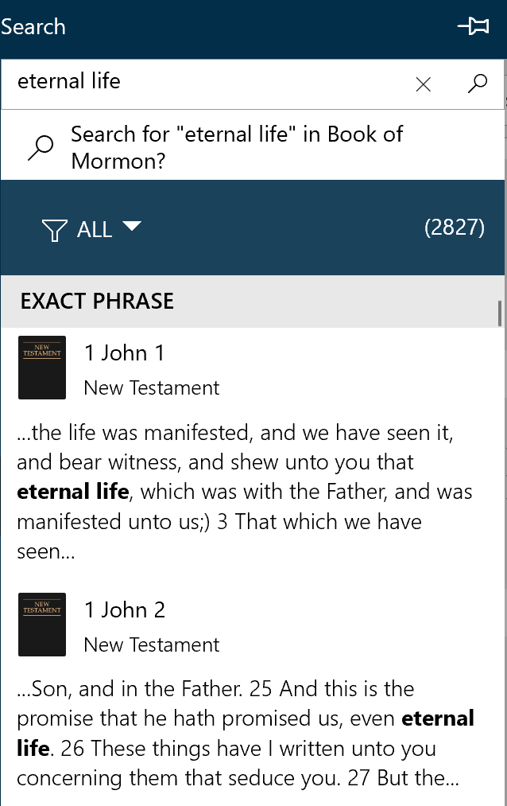

) in the media ribbon that provides additional media controls, such as playback speed and volume.
) in the media ribbon that provides additional media controls, such as playback speed and volume.Acrylic – An available setting that provides a glass-like effect for the app's various themes, Black and Night themes excepted.
Additional Media Controls – A button () in the media ribbon that provides additional media controls, such as playback speed and volume.
Always Hide the Navigation Bar – A setting in the Settings pane that hides the navigation bar from the left side of the screen until it is brought back by pressing the Expand/Collapse Button.
Always Show the Tabs Bar – A setting in the Settings pane that, when enabled, will prevent the tabs bar from collapsing into the home ribbon when there is only one tab.
Annotate Ribbon – The ribbon on which many annotation options are available, including highlighting, underlining, notes, notebooks, tags, links, and journal entries. See Chapter 4.

Annotations Editor – The box that appears when you create or edit a note or tag. See Chapter 7.
Annotations Pane – The navigation pane that offers an overview of your annotations, including your highlights, underlines, tags, links, and journal entries. See Chapter 9.
App Language – The language the app uses to talk to you. This differs from the content language, which is the language the scriptures, magazines, and other materials appear in when opened. See Chapter 14.

Auto Theme – A feature and setting in the Settings pane that, when turned on, will switch the app to the black theme when it's dark around you. This feature requires an ambient light sensor on your device. See Chapter 16.
Back Arrow – An arrow in the Home ribbon that takes you back one step in your history.
Black Theme – A black and dark grey color scheme optimized for reading in places without a lot of light.
Book – Any individual non-media downloadable item in the application. For example, the February 2015 Ensign or the Book of Mormon.
Bookmark – A feature that allows you to return to various places in your studies. See Chapter 5.
Bookmarks Pane – The navigation pane that offers a list of your bookmarks to allow you to return to your studies from where you left off. See Chapter 5.
Breadcrumbs – Sections and subsections listed in the omnibox that lead to your current location. Each of these sections is a breadcrumb that can be pressed to go to the section directly. Additionally, the arrow next to each breadcrumb allows you to navigate to a different section or chapter quickly. See Chapter 1.
Catalog – The app's list of books and instructions it uses to download them.
Catalog Version – The particular edition of the catalog the app is using. An out of date catalog can cause issues for the app, making it impossible to download books or to navigate.
Change Log – A page that appears when the app is updated with an overview of the changes in the update. You can revisit the change log by visiting the About section of the Settings menu and pressing the Show Change Log button.
Church Account – Your account at ChurchofJesusChrist.org that allows you to sync your annotations across multiple devices.
Collection – A group of collections or content units.
Content Language – The language the scriptures, magazines, and other materials appear in when opened. When you change content languages with a book open, the app will try to switch to the same place in the book in the new language. This differs from the interface language, which is the language the app uses to talk to you. See Chapter 14.
Content Library – The list of all available books in the app as it appears on the Home Screen and in the Library pane.
Content Unit – The basic information stored in the library collections (e.g. scripture chapter, general conference talk, magazine article). When searching through a library it is the final destination of the search.
Context Menu – The menu that appears after clicking the hint bubble ( ), containing various options for annotating and otherwise interacting with gospel texts.
), containing various options for annotating and otherwise interacting with gospel texts.

Continuous Play – A media feature that tells the app to begin automatically playing the next chapter in the book once it finishes the current chapter.
Custom Theme – A theme generated from your choice of one of fifty different colors.
Deep Search – A search that occurs when pressing return after entering a search query in the omnibox or the search box in the Search pane. It returns results from within the pages of all books you've downloaded. See Chapter 12.
Default Note Visibility – An option in the Settings pane that will either expand or collapse your notes by default. When a note is collapsed, only a note icon ( ) appears on the right side of the page.
) appears on the right side of the page.
Default Notebook – The notebook into which new highlights, underlines, and other annotations are stored by default. This can be changed in the Annotate ribbon.
Default Theme – The blue and white theme used in the app by default.
Download All – An option that downloads all books available in the app's current content language.
Download Section – An option that downloads an entire section of books.
Downloadable Document – The smallest downloadable collection (e.g. Book of Mormon, General Conference April 2022).
Expand/Collapse Button – A small button in the top left corner of the app ( ) that expands the current navigation pane.
) that expands the current navigation pane.
Font – The typeface used by the application to display book text. One of them, OpenDyslexic, is applied to the entire app when selected.

Forward Arrow – An arrow in the Home ribbon that takes you forward one step in your history.
Hamburger Button – See Expand/Collapse Button.
Highlight – A marking that colors the background of the text that has been marked.
Highlight Colors – The set of colors used to show your highlights and underlines. You can change to any of six different sets of colors. See Chapter 16.
Hint Bubble – A small circle () that appears when text is selected. When pressed, the context menu is opened.
History Pane – The navigation pane that lists the chapters from books you've visited most recently.
Home Button – A button that takes you to the home screen of the app. See Chapter 1.
Home Page – See Home Screen.
Home Ribbon – The main ribbon that includes primary navigation options, including the forward and back arrows, the omnibox, the home button, and more. See Chapter 1.
Home Screen – The main page of the app, where the content library is listed. See Chapter 1.
Immersive Mode – A feature that hides the interface so that you can focus on your reading. You can access the feature by double-clicking or double-tapping in blank space in the reading area. You can also turn immersive mode on or off using the toggle ( ) beside the minimize button at the top of the app.
) beside the minimize button at the top of the app.
Immersive Mode on Double Tap – A setting in the behavior section of the Settings pane that enables or disables immersive mode.
Interface Language – See App Language.
Journal Entry – A place to record your thoughts and impressions, relevant quotes from general authorities or the scriptures, or to aid you in rephrasing scriptures and the words of prophets in your own words. Unlike notes, journal entries aren't tied to a specific location. The journal entry feature is intended as a study tool for recording thoughts related to your gospel studies, not for personal journaling. See Chapter 8.
Library – See Content Library.
Library Language – See Content Language.
Limit Downloads on a Metered Connection – A setting in the settings pane that will prevent the app from updating content and downloading library catalog updates over a metered connection.
Link – A custom cross reference. See Chapter 11.
Live Cursor – A feature that immediately highlights or underlines text as it is selected with a mouse cursor.
Live Pen – A feature that enables devices with a pen and active digitizer to highlight or underline in a fashion similar to a traditional pen or pencil.
Logging Level – This setting is used by developers to help diagnose issues. It's best not to change this setting without a developer asking you to do so.
Marking – A highlight or underline.
Media Ribbon – The ribbon where the media options, including the ability to play audio and video, are available. See Chapter 15. The media ribbon is only available on devices running the Windows 10 Anniversary Update or newer. If you aren't seeing the media ribbon, you will need to update Windows to use multimedia features in Gospel Library.
More Button – A button () appearing in a few places throughout the app that offers a few additional options or features.
Navigation Bar – The solid bar on the left side of the app that has buttons related to different navigation-related tasks, like history, bookmarks, annotations, and search.
Navigation Pane – Any of the rectangular panes that slide in from the left when you click one of the buttons on the navigation bar.
Night Theme – A dark grey color scheme optimized for reading in places without a lot of light.
Note – A place to record your thoughts and impressions, relevant quotes from general authorities or the scriptures, or to aid you in rephrasing scriptures and the words of prophets in your own words. Notes are tied to a specific location, like 2 Nephi 2:1. See Chapter 7.
Notebook – A collection of annotations.
Omnibox – A horizontal box on the Home Ribbon that contains the breadcrumbs showing your current location. Can also be used for searching. See Chapter 1.
OpenDyslexic – A font designed to be easier for people with dyslexia to read. Learn more at opendyslexic.org.
Pin/Unpin Pane – A button ( ) at the top-right corner in each of the navigation panes that will "pin open" the navigation pane. Pinning it open will also cause the app to move text out from behind the pane so that it can be read while the pane remains open. See Chapter 16.
) at the top-right corner in each of the navigation panes that will "pin open" the navigation pane. Pinning it open will also cause the app to move text out from behind the pane so that it can be read while the pane remains open. See Chapter 16.
Pinch to Zoom – The ability to adjust text size by pinching your fingers together or pulling them apart on a touch screen.
Preview Button – A button () that appears next to each annotation in the Annotations pane. When pressed, it shows the verse, verses, paragraph, or paragraphs where the annotation was made.
Print – A button in the More menu on the Home ribbon that allows you to print content, including its images, to a printer connected to your device. See Chapter 13.
Print without Images – A button in the More menu on the Home ribbon that allows you to print content, except its images, to a printer connected to your device. This option is available to help you conserve ink or toner. See Chapter 13.
Quick Search – A title- and chapter name-based search for quickly getting where you want to go. See Chapter 12.
Reference – A link in content that provides additional context or the original source for a quotation. Unlike user-created links, references are a part of the content in which they reside.
References Pane – The navigation pane that offers a list of references from the currently open book.
References Snapdown – A list of references from the currently open book available in a list snapped to the bottom of the screen. Replaces the references pane when active.
Reset Application – An option at Settings > Advanced Settings > Reset Application that support may ask you to use to reset your app. This option resets the app back to a freshly-installed state.
Restore Tabs at Startup – A setting in the Settings pane that when enabled, will cause the app to restore the tabs from the last-closed window from the last time you used Gospel Library.
Ribbon – The collapsible rectangular menus at the top of the app, including the Home, Annotate, Media, and View ribbons.
Role-Based Content – Content made available to individuals in specific callings or situations, like leadership or teaching positions.
Search Pane – The navigation pane that offers search functionality and lists results to search queries. See Chapter 12.
Section – A cluster of books or books and subsections.
Seek Forward – Moves forward ten seconds in the currently playing audio or video.
Seek Backward – Moves backward ten seconds in the currently playing audio or video.
Select Audio – The option to play audio in the media ribbon when pressing play. This option is also used to tell the app to move to the next chapter when continuous play is not enabled.
Select Video – The option to play video in the media ribbon when pressing play. This option is also used to select video quality and to tell the app to move to the next chapter when continuous play is not enabled.
Semantic Zoom – A means of quickly navigating the library by category or by first letter. See Chapter 1.
Sepia Theme – A brown-based color scheme designed to be easy on the eyes for people with certain eyesight problems.
Settings Pane – The pane that offers settings for features in the app.
Share – A feature that allows you to quickly and easily share excerpts or chapters from your gospel study with loved ones. See Chapter 13.
Show Hyperlinks – A setting in the Settings pane that changes the color of references from their default (blue in the default theme) to blend in with the surrounding text.
Show Notes – A setting in the Settings pane that completely hides notes in the text of books you read, including the icons that would normally appear on the right side of the text.
Show Page Numbers – A setting in the Settings pane that hides page numbers from the right side of the app.
Show Superscripts – A setting in the Settings pane that hides the superscript letters and numbers that appear next to words that have a related reference.
Show/Hide Hyperlinks – An option in the View ribbon that changes the color of references from their default (blue in the default theme) to blend in with the surrounding text.
Show/Hide Notes – An option in the View ribbon that completely hides notes in the text of books you read, including the icons that would normally appear on the right side of the text.
Show/Hide Page Numbers – An option in the View ribbon that hides page numbers from the right side of the app.
Show/Hide Superscripts Button – An option in the View ribbon that hides the superscript letters and numbers that appear next to words that have a related reference.
Show Obsolete Content – An option in the Settings pane that will cause the app to show content that has been hidden from view because it has been marked obsolete in the content catalog.
Sort by Most Recent – An option in the Bookmarks pane that allows you to sort your bookmarks so that the most recently-used bookmarks appear at the top of the list.
Sort by Name – An option in the Bookmarks pane that allows you to sort your bookmarks alphanumerically.
System Theme – A theme generated from your accent color in Windows 10.
Tab – A means of quickly navigating amongst multiple open books. See Chapter 6.
Tabs Bar – The bar below the ribbons that houses each of the currently open tabs. See Chapter 6.

Tag – An annotation that marks what you've tagged as belonging in some way to the tag. For example, various scriptures on faith could be labeled with a "Faith" tag. See Chapter 10.
Text Size – A setting in the Settings pane that allows you to adjust the size of the text in books in Gospel Library.
Theme – The color scheme used in the app.
Transparency – A setting that, when Acrylic is enabled, controls the opacity of the app's interface.
Underline – A marking that leaves a line below marked text.
View Ribbon – The ribbon that offers various shortcuts to settings for things that could obstruct your reading experience.

Visible Notebooks – A list of notebooks that are showing the annotations they contain in the app. See Chapter 9.
Window – A means of quickly navigating amongst multiple sets of open books. See Chapter 6.